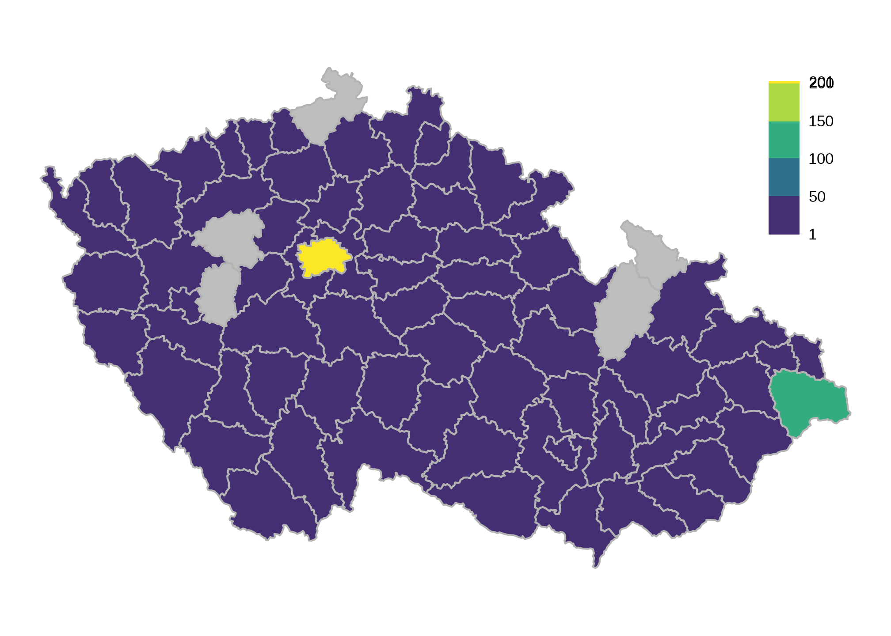
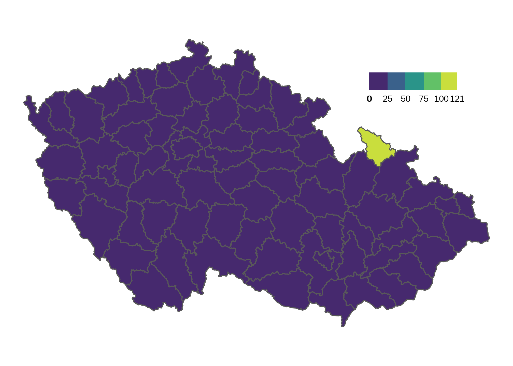

Covid-19 CZ: selected data for the Czech Republic
Covid-19 cases overview
Growth by district since 26. července 2020

Cases last week

Days since last case in each district

Mortality statistics
Fixed axes (Full comparison)

Detail (separate axes)

Last built on 2020-08-02 19:25 CEST